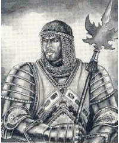
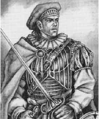
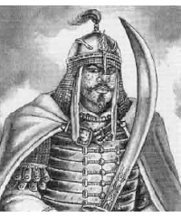
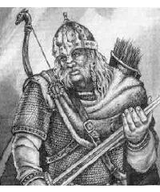
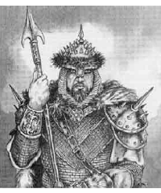

2144
| Anurien (Knight) | Brecht (Tradesman) | Khinasi (Soldier) | Rjurik (Berserker) | Vos (Mercenary) | |
|---|---|---|---|---|---|
| Frequency: | Rare | Common | Common | Uncommon | Common |
| Treasure: | L,M | 1-100 gp | I | Nil | L,M |
| Alignment: | Any lawful | Any | Any | Neutral | Lawful neutral |
| No. Appearing: | 1-20 | 2-12 | 10-100 | 10-100 | 10-100 |
| Armor Class: | 2 or 4 | 8 | 8 to 4 | 8 to 6 | 7 to 4 |
| Hit Dice: | 2+ | 1-6 hp | 1-6 hp | 2-7 hp | 2-8 hp |
| THAC0: | 19 or less | 20 | 20 | 20 | 20 |
| Morale: | Elite (14) | Steady (11) | Steady (10) | Fearless (20) | Steady (12) |
| XP Value: | Varies | 15 | 15 | 15 | 15 |
This is a short guide to the humans of Cerilia, home of the Birthright setting. As characters from this setting venture forth, they might be encountered nearly anywhere, particularly if interworld gates or far-ranging spelljamming is common. Nearly all of the general types of humans listed in the Human entry exist in Cerilia.
Anuirean
These people are native to the southwest portion of Cerilia. The ancient Anuireans were a fair-skinned, red-haired people, but they have mixed with the other Cerilians over the centuries, so that blond, brunette, and black-haired Anuireans are at least as common as the original stock.
Their culture is semifeudal and based on a class of free farmers and craftsmen. Local rulers are usually titled nobles. The Anuireans respect nobility and look to their leaders to protect them from the barbarians and savages who surround the states of the old Anuirean Empire.
Wizards are in general mistrusted, though one in the service of a noble is tolerated. Bards enjoy the role of herald and lore-keeper, and are welcomed and well-respected. A lively rural tradition includes robber barons and infamous outlaws.
Commoners identify strongly with their lords, and the dealing and alliances of the noble families are topics of continuous discussion throughout Anuirean lands. While the squabbling feuds of petty lords prevent a return to Anuirea’s lost imperial greatness, their armoes of mounted knights, well supported by men-at-arms and court mages, are difficult to beat. A typical Anuirean field force has 25-40% knights, 30-50% professional infantry (mostly pike- or spear-armed, though up to half might have longbows), and 25-40% feudal levy infantry, Both paladins and rangers might be found in such a force, though not in particularly great numbers.
Brecht
These short, stocky, dark-haired people live in north-central Cerilia. Early in their history, they were under the rule of Anuirean governors. During this time, Brecht nobility declined drastically in power and importance. When the Empire fell and the Brechts gained independence, the guilds and merchants came into power. The current nobility is weak, and several states have declared themselves republics. Many Brechts are seafaring traders.
The magical arts are mistrusted, most often finding an outlet in scholarly discipolines such as alchemy or the fabrication of more mechanical inventions. Bards are viewed as wastrels, whose works are pretty, but ultimately frivolous and lacking solid value. They are tolerated, but considered a bad examule for the young.
The Brechts believe in free enterprise, and Brecht society revolves around wealth. The Brechts have a fierce love of independence and a tradition of self-reliance; they don’t wait for their lords or rnlers to solve problems for them. Commerce and trade are expressions of this belief, and Brecht commoners owe their first loyalty to guilds and companies.
The Brecht are conservative and pragmatic, preferring to bargain their way out of trouble if possible. While not entirely cold to the needs of others, they tend to weigh the costs and benefits of their actions; they are not given to heedless generosity or wild gambling. They are comfortable with their own lifestyle, and slow to adopt the ways of others.
A typical Brecht field force has 10-20% bights, 40-50% professional infantry armed with pike or crossbow, and 20-30% militia. The leaders and front ranks of pikemen are the most heavily armored, and Brecht foot soldiers are generally steadier than their Anuirean counterparts. Paladins are rare, but rangers are rarer. The strength of such a force is often in its masses of pikes, though lighter raiding forces might be landed by sea to harry the coastal towns and farmlands of a foe.
Khinasi
These people come from the region called Khinasi and speak a language called Basarii. They are tall and lanky, with aquiline features and dark eyes. Their complexions range from a light coffee to a dark brown.
Men wear loosrfitting breeches of light colored linen or silk, a broad sash of colorful fabric, and a tight-fitting high-collared shirt with half- or three-quarter length sleeves. Colorful vests are common and wealthy men wear lavishly decorated shoes. Women’s dress is similar, but cover the legs to the ankle and arms to the wrist for decency. It is considered improper for either gender to appear in public without a head covering, generally a cap, scarf, turban, or light veil.
Unlike the other human cultures of Cerilia, the Khinasi have no fear of magic. The study of magic is considered the noblest of callings, but raising or communicating with the dead is strictly forbidden.
Khinasi bards are not respected, being mostly poor wanderers of dubious honesty. They lack the status of Anuirean bards, and are commonly considered vagrants and thieves. Professional storytellers, however, are highly respected.
Thieves’ guilds are vigorously rooted out by Khinasi city governments, though some operate succesfully. The culture has a long tradition of hidden cults and guilds of assassins, though most Khinasi view their activities with horror.
Like the Brechts, Khinasi commoners are traders and merchants, but an individual’s decorum, hospitality, conduct, and ability to entertain lavishly are far more important than wealth. Piety, politeness, and eloquence mark high breeding and wisdom, and Khinasi disputes are marvels of suggestion. Khinasi agpssively assimilate aspects of other cnltures they find useful, yet maintain a core lifestyle that is their own.
Many Khinasi sprinkle everyday speech with brief prayers for success in routine ventures, blessings on passing strangers, and invocations of divine favor for great enterprises. Swearing in a deity’s name is a horribly crude and barbaric act. Slavery is unknown; a person of skill might rise without limit with hard work and a little luck. Khinasi rulers are skilled in diplomacy and subtle. The highest noble titles include emir, satrap, sultan, and khan.
In war, the nobles fight as mailed cavalry mounted on medium horses, armed with lance, scimitar (or saber), and javelins. Khinasi professional warriors wear chain mail and carry scimitars, while Khinasi militia is generally unarmored. Typical militia weapons include spears, clubs, daggers, and composite bows. Seafarers and herders typically wear leather armor and might carry a cutlass or short sword, sling, or dagger.
A typical Khinasi field force has 30% medium cavalry, 20-30% light cavalry, and 40-50% split between spear-armed militia levies, archery, and irregular light troops such as hillmen or marines. Paladins are as common as in Anuirean armies, rangers tend to be from hills or deserts instead of forests.
Rjurik
These tall, broad-shouldered people live in the forests and highlands of northwestern Cerilia. They have blond or red hair and fair complexions. Men and women most commonly wear their hair in long braids.
The Rjurik are stubborn individualists who don’t swear fealty to anyone but their own kin; the family is the most important part of Rjurik life. The local rulers are jarls, though druids hold the real power.
The Rjurik are suspicious of wizards and outland priests and may treat them roughly or subject them to crude pranks if given cause. Bards are called skalds, and are the keepers of history and lore. A bard can find a ready hearth in all but the meanest of Rlurik halls.
Most Rjurik follow the god Erik, a druidical ppwer, and druids are revered throughout Rjurik society as teachers, leaders, and advisers. All Rjurik have a deep respect and love for Cerilia’s wilds, and carefully avoid over-hunting or clearing virgin forest.
A hpical Rjurik force has 20-25% elite warriors under the overall chieftain, 25-40% experienced warriors trained to fight in close order, 25-30% irregular warriors with light weapons, and up to 25% light archers. The war chief, war band leaders, and their immediate retinues have the best armor, usually chain mail, and the war axe is a favored weapon. There may be a scattering of berserkers, but no rangers or paladins.
Vos
The Vos are a barbaric race from the cold mountains and forests of northeastern Cerilia. They are a tall, thick-boned people with flat features, light eyes, and sallow skin. Male warriors are fond of shaving their heads and wearing long, drooping mustaches. Their dress is rough, often quilted, and heavy furs are worn against the bitter cold.
The Vos have a rigid code of face and honor that demands blood for even unintentional insults. Their leaders are warchiefs known as tsarevos who are advised by the priests of the grim Vos gods. Almost all Vos men are warriors and hunters — other professions are considered unmanly. Vos women are by custom greatly limited in their freedoms, although a few women have succeeded as warriors or tsarevas.
Magic is the prerogative of the nobility — wizards are feared by the people. However, no noble would throw away a peasant skilled in magic who could be useful against his enemies.
Vas live in lands bitterly contested by orogs and similar humanoids, and harsh conditions have bred a harsh people Their rulers are visionary priests of dark and bloody gods who encourage continual warfare against each other and the enemies surrounding them. Though the Vos don’t believe in mercy, they understand compassion — while they hunt their enemies ruthlessly, true friends are treasured.
A typical Vos field force has 25% lizard riders (exceptionally mobile in snow), 50% close order footmen, and the rest archers or irregular light infantry. Because paladins and rangers are nearly unheard of and wizards and priests are rare, Vos war leaders compensate by becoming masters of stratagem and treachery. Two key strengths of the Vos are the stoic capacity to function in spite of extreme privation — lack of food, shelter, warmth, and equipment — and an extraordinary discipline and march endurance. It is not unusual for a Vos armv to outmarch a conventional force of cavalry, and more than one encamped Vos army has slipped away in the night without alerting vigilant enemy scouts.
◆ 1017 ◆